Dual Monitor Setup
The first step in getting OpenLP working on your system is to setup your computer properly for dual monitors. This is not very difficult, but the steps will vary depending on operating system.
Most modern computers have the ability for dual monitors. To be certain, check your computer’s documentation. A typical desktop computer capable of dual monitors will have two of, or a combination of the two, connectors below.
VGA
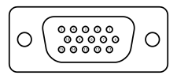DVI
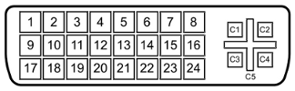HDMI
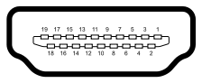S-Video
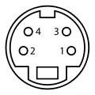A laptop computer setup varies slightly. Generally you will need only one of
the outputs pictured above since your laptop screen serves as one of the
monitors. Some older laptops may require a key stroke generally involving the
Fn key and another key (labeled on the keybaord) to enable the second
monitor.
A typical OpenLP setup consist of your normal single monitor, with your projector hooked up to your computer as the second monitor. With the option of extending your desktop across the second monitor, or your operating system’s equivalent.
Special Note For Projectors Using USB Connections
Users have reported experiencing difficulties when using a projector with a USB connection. Third party software is often required to properly configure dual monitors. If possible, it is best to use a direct output (VGA, DVI, HDMI, S-Video) from your machine’s video card. If a USB connection is your only option please consult the manufacturer’s manual for instructions on a proper setup.
Microsoft Windows
Dual monitor setup is similar among all the currently supported Windows releases (Windows 8 & 10, Windows 7, Windows Vista), but does vary slightly from one release to the next.
Windows 8 & 10
When using Windows 8 and 10 enabling your projector is easy. Simply connect your
projector and press Windows+P.
The more traditional way is also fairly straight forward. Go to Control Panel and click on Adjust screen resolution under Appearance and Personalization.
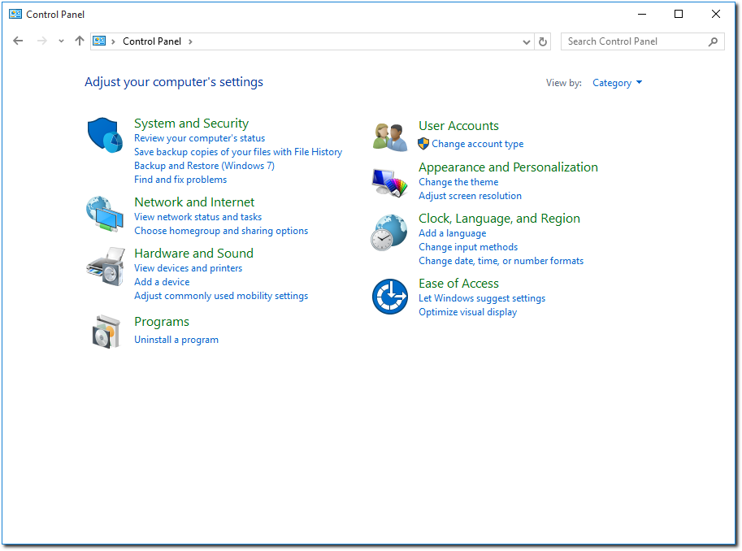This will open up a window for configuring your screens. Enable your projector and make sure that the selected value for Multiple displays is Extend these displays.
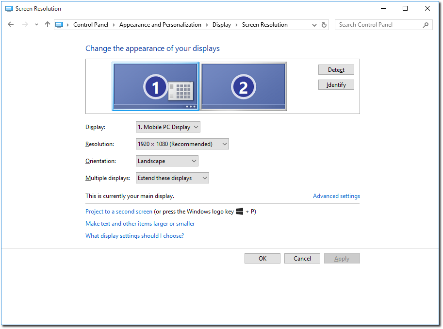On Windows 10 there is also a different way of configuring your screens. By right-clicking on the desktop and choosing Display settings a different configuration window will appear.
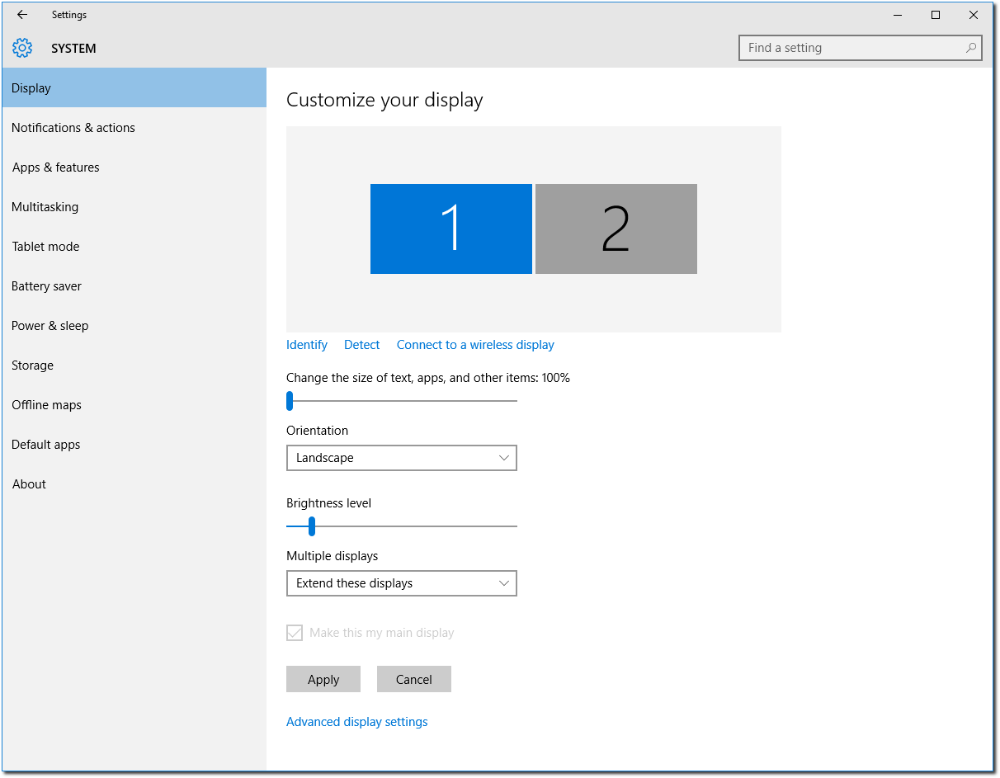To change the resolution of the screens you will have to click Advanced display settings.
Recommendations
Windows 8 and 10 have several features that might seem smart on a normal desktop but which is not something that should be enabled when you want to use the computer for presenting songs, etc. during a service.
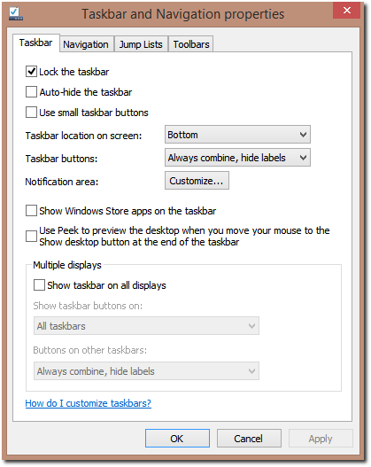Right click the task bar and choose Properties. You should uncheck Use Peek to preview... since it will totally blank the 2nd display if hovering mouse over an icon on the taskbar. You should also uncheck Show taskbar on all displays.
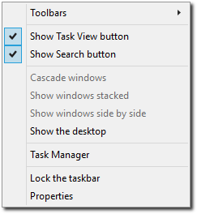If you use Windows 10 you should probably also hide the Task View button from the taskbar, since clicking it will blank your 2nd display. To disable it, right click the taskbar, and uncheck Show Task View button.
Windows 7
Windows 7 has using a projector in mind. Simply connect your projector and
press Windows+P.
The more traditional way is also fairly straight forward. Go to Control Panel and click on Display. This will open up the Display dialog. You may also bypass this step by a right click on a blank area on your desktop and selecting Resolution.
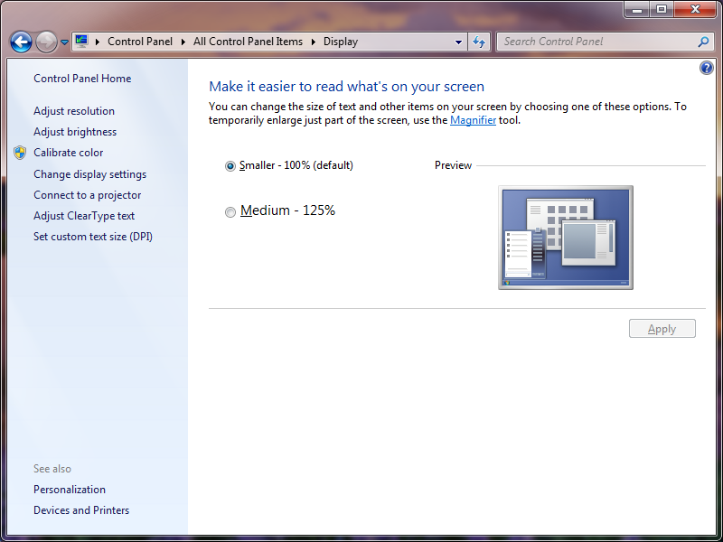Then click on the Adjust resolution link in the left pane. Enable your projector and make sure that the selected value for Multiple displays is Extend these displays.
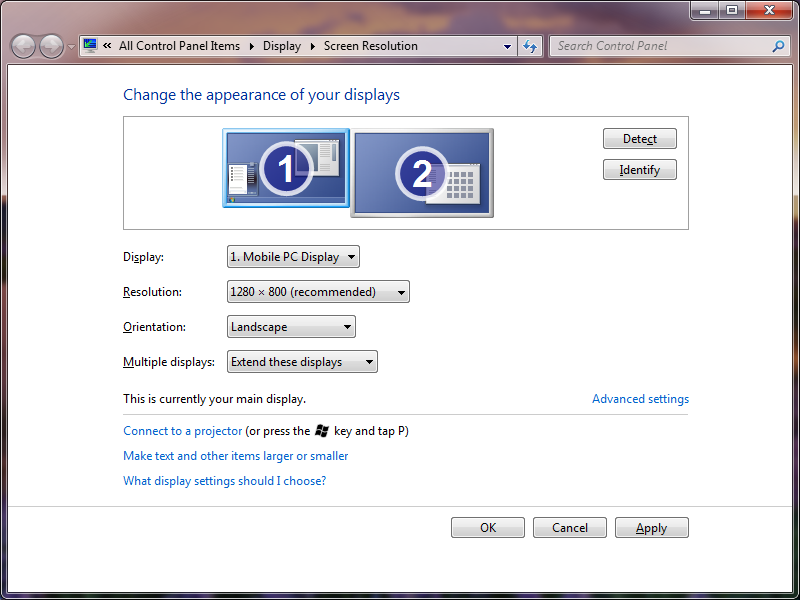Windows Vista
From Control Panel click on Personalize, or right click a blank place on the desktop and click Personalization.
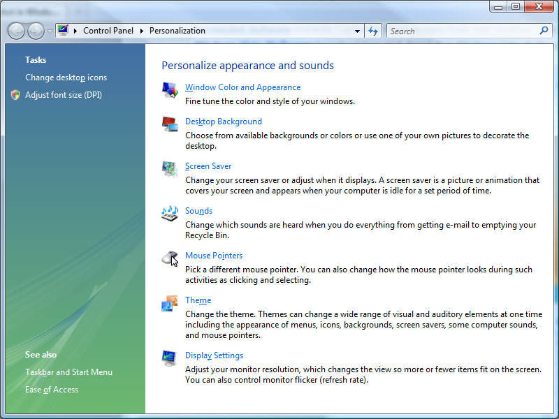From the Personalization window click on Display Settings. Click on the monitor that represents your projector and make sure you have checked Extend the desktop onto this monitor.
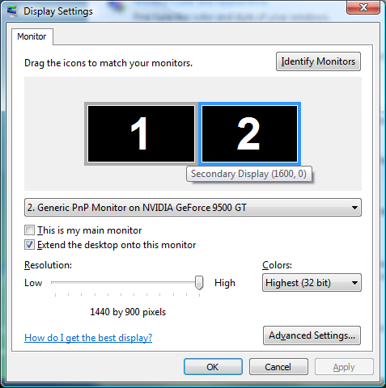Linux
Due to the vast varieties of hardware, distributions, desktops, and drivers this is not an exhaustive guide to dual monitor setup on Linux. This guide assumes you have properly set up any proprietary drivers if needed. You should seek out your distributions documentation if this general guide does not work.
Note to Ubuntu Users: Standard Ubuntu uses the Unity interface. Unfortunately we cannot recommend using Unity for a dual display setup with OpenLP, since there seems to be no reliable way to hide the menubar from the secondary display, as well as other issues. Instead we recommend using a different desktop environment like GNOME, KDE or Xfce, all of which are available from the Ubuntu repositories, and via special Ubuntu variants, such as Ubuntu GNOME, Kubuntu or Xubuntu.
GNOME 3
This guide is for users of the GNOME 3 or GNOME Shell desktop who do not use proprietary drivers. In GNOME shell in the search box type Displays or in GNOME shell or fall back mode go to then select Displays.
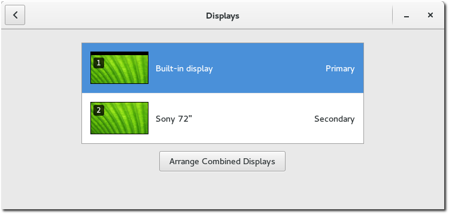By clicking on each of the displays listed you can change the mode, resolution and orientation of the displays.
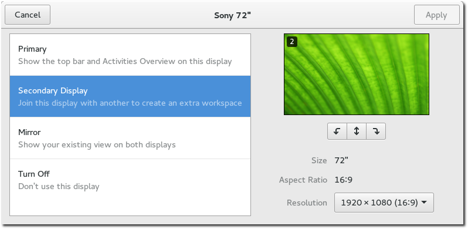Make sure to put the display you plan to use for presenting to be the Secondary Display.
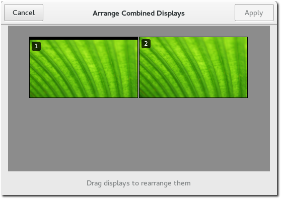Back in the Displays window, click Arrange Combined Displays to arrange the displays. If after setting up your monitors you have the top panel on the wrong monitor simply drag it to the monitor you want to serve as the primary screen.
KDE
This guide is for users of the KDE desktop who do not use proprietary drivers. From most distros click the Kick Off menu and navigate to System Settings
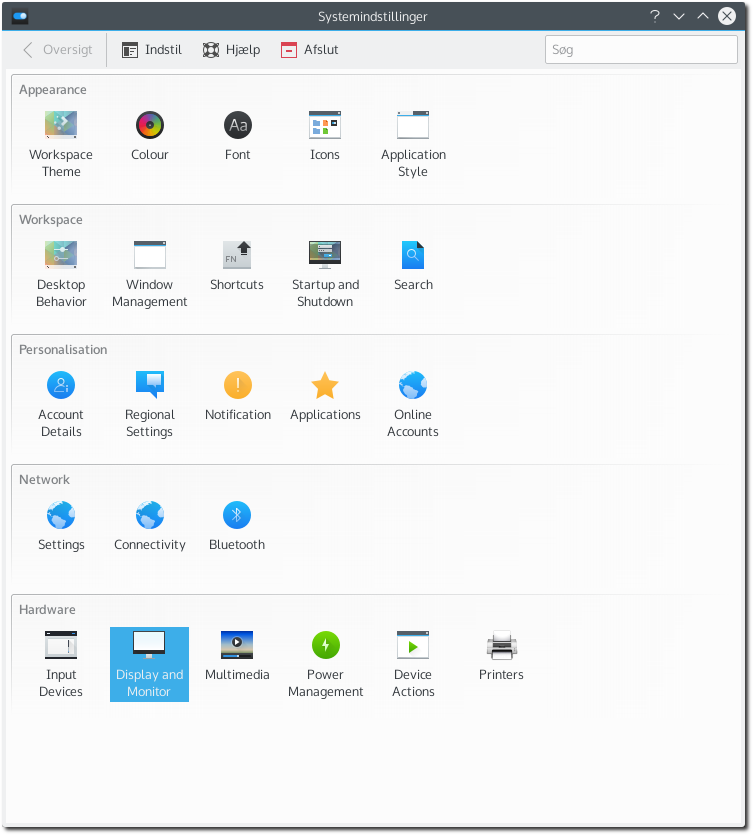Click on the Display and Monitor icon.
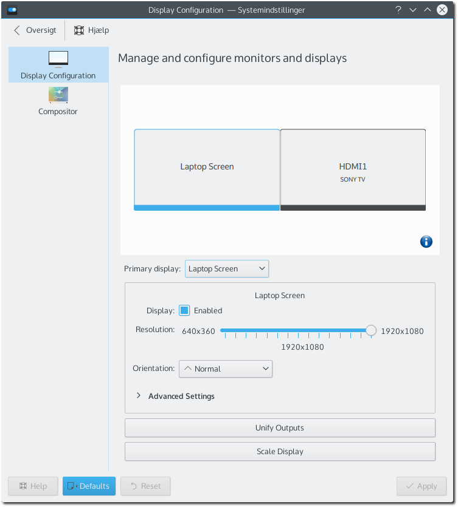From here you will need to set up your projector with the appropriate resolution, and position. OpenLP works best projecting to the monitor on the right.
Xfce4
This guide is for users of the Xfce4 desktop. Open the Xfce4 menu and chose Settings Manager.
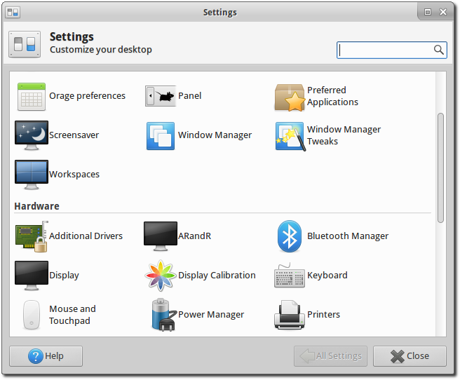Open Display to open the settings for displays.
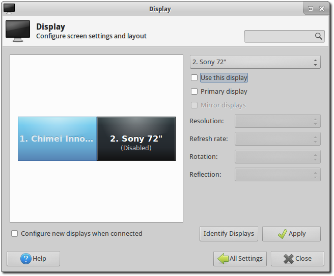If the second display has not yet been enabled, enable it by selecting it in the window and tick Use this display.
There is an issue with the Xfce4 compositor that makes OpenLP freeze when using a dual monitor setup. This issue can be worked around by disabling an option for the compositor. To do this open Settings Manager and open Window Manager Tweaks.
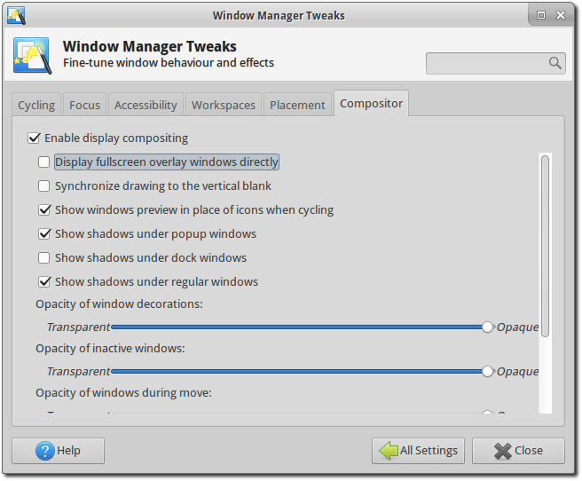Go to the Compositor tab and disable Display fullscreen overlay windows directly. Click Close and now OpenLP should run without issues.
Linux Systems Using nVidia Drivers
This guide is for users of the proprietary nVidia driver on Linux Distributions.
It is assumed that you have properly setup your drivers according to your
distribution’s documentation, and you have a working xorg.conf file in
place.
If you wish to make the changes permanent in setting up your system for dual
monitors it will be necessary to modify your xorg.conf file. It is always a
good idea to make a backup of any critical file before making changes:
user@linux:~ $ sudo cp /etc/X11/xorg.conf /etc/X11/xorg.conf.old
For those using systems that use the root user instead of sudo, change to root and enter:
root@linux: # cp /etc/X11/xorg.conf /etc/X11/xorg.conf.old
The exact location of the xorg.conf file can vary so check your
distribution’s documentation.
If you want to make your changes permanent run nVidia settings from the terminal:
user@linux:~ $ sudo nvidia-settings
Or, as root:
root@linux: # nvidia-settings
If you do not want to write the changes to your xorg.conf file simply run
the nVidia Settings program (nvidia-settings) from your desktop’s
menu, usually in an administration or system menu, or from the terminal as a
normal user run:
user@linux:~ $ nvidia-settings
Once you have opened nVidia Settings, click on X Server Display Configuration. Select the monitor you are wanting to use as your second monitor and click Configure.
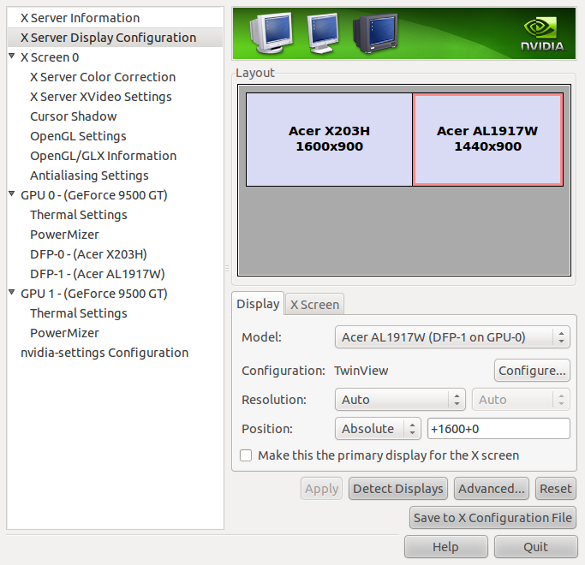After clicking Configure, select TwinView and click OK.
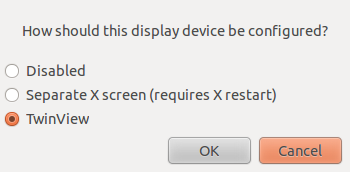Click Apply and if you are happy with the way things look click Keep to save your new settings. Don’t worry if something goes wrong, the settings will return back to the previous settings in 15 seconds without any action. nVidia Settings should take care of selecting your optimum resolution etc, but that can be changed as needed. When you are happy with everything click on Save to X Configuration File.
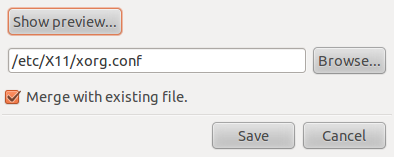Click Save and you should be set. You may want to restart X or your machine just to make sure all the settings carry over the next time you log in.
Linux Systems With Intel Video
Generally systems with Intel video cards work very well. They are well supported by open source drivers. There are, however, a couple of issues that may require some work arounds.
Resolution Issue
There is a limitation with certain cards which limits the total resolution to 2048x2048, so both monitors can not have a total resolution totaling more than that. To work around this it may be necessary to position your monitor as a top or bottom monitor as opposed to the typical side by side setup. This can easily be accomplished through your desktop’s control of monitors. Please see the sections on dual monitors with KDE and GNOME above.
Primary Monitor Issues
With certain cards your system may get confused on which is the primary display. For example many users will be using a laptop. You will want your laptop screen to be the primary screen, and your projector to be the secondary monitor. Certain Intel cards reverse this. To work around this you will need to know the name of your monitor. If you are a KDE user this info is given to you in the display settings. If you are not using KDE enter the following in a terminal without your projector connected to your computer:
user@linux:~ $ xrandr -q
This will give you a long string of output. Screen names will be something along the lines of LVDM, VGA-0 or some convention similar to that. Without your projector connected to your computer only one monitor will show as being connected. That will be the monitor you will need to use as the primary. Now connect your projector and enter:
user@linux:~ $ xrandr --output LVDM --primary
Note it has been reported that when this issue is occurring you will not want to connect your projector until your desktop is running.
Mac OS X
This short guide will tell users of Mac OS X how to setup dual displays.

Open System Preferences in the Apple menu.

Choose the Displays option.
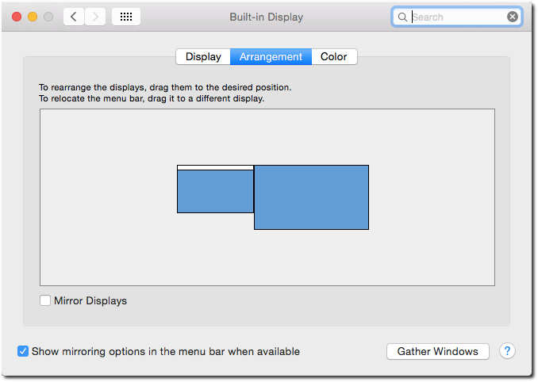Click Arrangement in the top of the window. Make sure that Mirror Displays is unchecked. You can now arrange the displays as you wish.